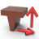

16.11. Modify eroding path
 | Make eroding path visible and modify. → | EDMconNG 2022.1 |
In order to influence the movement of the electrode through the workpiece and the erosion movement during the erosion process, make the eroding path visible and modify it.
An electrode with an eroding path can be neither copied nor moved.
For Blind and Through, the C angle must be added (if defined during creation). When the electrode is created, the C angle only contains 3 points.
If the reference position of the electrode for the target position is on the contact face, no C-axis rotation can be defined. The axis of the machine does not match the axis of the electrode. The rotation of the electrode is automatically inserted at the first point of the selected curves at the beginning of the eroding movement when the curves of the eroding path are selected for Blind or Through.
Note
If an eroding path is changed, it must be checked by the user!
Select
Electrode: Select an electrode. The electrode name is shown. The existing eroding path is made visible.
Note
If an electrode cannot be selected, check in Virtual electrode whether it is because it is a copied electrode. Extract the electrode, if necessary.
If a master electrode can be selected, then it is only to simulate the eroding path. It is not possible to change the eroding path.
Extract eroding path. The path information stored for the electrode is output as curves for purposes such as inserting dimensions or changing the eroding path using these curves.
3 points
The electrode is moved back and forth along the same eroding path from three positions. The initial situation is the situation after the generation of an electrode.
Clearance position: Change the X, Y and Z coordinates of this electrode position.
Start position: Change the X, Y and Z coordinates of this electrode position.
Target position: The X, Y and Z coordinates of the electrode target position are displayed and cannot be changed.
Blind
The electrode is moved back and forth along the same eroding path from more than three positions. Construct an electrode suitable for this purpose. Construct waypoints suitable for this purpose and connect them with curves. The curves are applied as eroding paths. Hide these points.
Important
Place the electrode in the target position of the eroding path. It is usually conveniently generated in this position. The curves only have to be selected once and are used for both directions of movement.
If only a single line is selected, then that line is reset to 3 points with the C angle that was assigned when the electrode was created. This can also be used to define a new target position.
Motion
Curves: Select curves that represent the path of the electrode  . Open the command Reset in the context menu to discard an existing eroding path. This allows the selection of the required curves to be started again.
. Open the command Reset in the context menu to discard an existing eroding path. This allows the selection of the required curves to be started again.
In addition to lines, arcs can also be selected as eroding paths. The curves can run three-dimensionally in space and do not have to lie in XY planes parallel to the EDM reference. The eroding path is broken down into individual waypoints.
Invert: Invert the direction of the electrode movement  .
.
Add point C-axis rotation
Point: Rotate the electrode at an angle around the C-axis at one position. Select the blue marker at the beginning or end of the respective curve segment as the Point  .
.
In the graphic area, enter an angle for the rotation around the C-axis directly at the selected point  . The angles of the individual turns are not summed. For example, for a further rotation at three points, each by 90°, enter the angle values 90°, 180° and 270°. The direction of rotation is determined by the preceding sign + / -. Plus turns in accordance with the right-hand rule, anticlockwise. Minus turns clockwise. In the NC program, a single-step, 180° rotation at a point is divided into two steps. For example, 0° - 90° - 180° or 10° - 100° - 190°.
. The angles of the individual turns are not summed. For example, for a further rotation at three points, each by 90°, enter the angle values 90°, 180° and 270°. The direction of rotation is determined by the preceding sign + / -. Plus turns in accordance with the right-hand rule, anticlockwise. Minus turns clockwise. In the NC program, a single-step, 180° rotation at a point is divided into two steps. For example, 0° - 90° - 180° or 10° - 100° - 190°.
Add synchronous C-axis rotation
Point: Rotate the electrode continuously at an angle around the C-axis between two positions synchronously with the forward movement. Select the yellow marker in the middle of the respective curve segment as the Point .
In the graphic area, enter an angle for the rotation around the C-axis directly at the point in the middle of the curve segment . The angles of the individual turns are not summed. For example, for a continuous rotation along six segments by 45° each, enter the angle values 45°, 90°, 135°, 180°, 225° and 270°. The direction of rotation is determined by the preceding sign + / -. Plus turns in accordance with the right-hand rule, anticlockwise. Minus turns clockwise.
Tolerance: The rotary movement is implemented in the NC program by subdividing into G1 segments and partial angles. Control the accuracy of the subdivision with the tolerance (approximate chordal tolerance).
Reset C-axis rotation
To delete a single C-axis rotation, select Point and select the relevant yellow or blue marker. Select All points to delete all C-axis rotations.
Through
The electrode is moved along the eroding path from a start position to a target position. Construct an electrode suitable for this purpose 
Construct waypoints suitable for this purpose and connect them with curves  . Hide these points.
. Hide these points.
Important
Place the electrode at the start position  . For a backward movement, another curve must be selected.
. For a backward movement, another curve must be selected.
Motion
Curves: Select curves that represent the path of the electrode . Open the command Reset in the context menu to discard an existing eroding path. This allows the selection of the required curves to be started again.
In addition to lines, arcs can also be selected as eroding paths. The curves can run three-dimensionally in space and do not have to lie in XY planes parallel to the EDM reference. The eroding path is broken down into individual waypoints.
Invert: Invert the direction of the electrode movement .
Add point C-axis rotation
Point: Rotate the electrode at an angle around the C-axis at one position. Select the blue marker at the beginning or end of the respective curve segment as the Point .
In the graphic area, enter an angle for the rotation around the C-axis directly at the selected point . The angles of the individual turns are not summed. For example, for a further rotation at three points, each by 90°, enter the angle values 90°, 180° and 270°. The direction of rotation is determined by the preceding sign + / -. Plus turns in accordance with the right-hand rule, anticlockwise. Minus turns clockwise. In the NC program, a single-step, 180° rotation at a point is divided into two steps. For example, 0° - 90° - 180° or 10° - 100° - 190°.
The curves and points are applied as the eroding path  .
.
Add synchronous C-axis rotation
Point: Rotate the electrode continuously at an angle around the C-axis between two positions synchronously with the forward movement. Select the yellow marker in the middle of the respective curve segment as the Point .
Tolerance: The rotary movement is implemented in the NC program by subdividing into G1 segments and partial angles. Control the accuracy of the subdivision with the tolerance (approximate chordal tolerance).
In the graphic area, enter an angle for the rotation around the C-axis directly at the point in the middle of the curve segment . The angles of the individual turns are not summed. For example, for a continuous rotation along six segments by 45° each, enter the angle values 45°, 90°, 135°, 180°, 225° and 270°. The direction of rotation is determined by the preceding sign + / -. Plus turns in accordance with the right-hand rule, anticlockwise. Minus turns clockwise.
The curves and points are applied as the eroding path.
Reset C-axis rotation
To delete a single C-axis rotation, select Point and select the relevant yellow or blue marker. Select All points to delete all C-axis rotations.
Collision check
SIMULATION Center: Open the SIMULATION Center and perform a motion simulation that includes checking for collision between workpiece and electrode.[3]
Spark gap: Enter a negative value as a negative, user-defined offset for the electrode. When the electrode is forwarded to the simulation center, the electrode is recalculated. Without this step, the simulation of the electrode path would indicate a collision as soon as the electrode comes into contact with the workpiece because the electrode is generated with the same faces as the workpiece without erosion offset. Without the conversion, it would otherwise not be possible to identify actual collisions.
To convert the electrode on the basis of a mesh, the accuracy of the mesh can be influenced with the help of two Windows environment variables. To make the environment variables take effect, restart the software.
Tip
Do not select an edge length that is too small. Reduce the tolerance for small fillets. If the SIMULATION Center takes too long, the values selected are too small or the mesh is too large to generate. If the offset cannot be generated, a warning message will be displayed. The electrode is then transferred to the simulation without an offset.
HC_ELECTRODE_MESH_TESS_TOL: The tessellation tolerance controls the accuracy of the permissible arc approximation. The preset value is 0.005.HC_ELECTRODE_MESH_MAX_EDGE_L: The maximum edge length determines the maximum edge length of the resulting triangles. The default value is 1.
The selection of the machine is carried out by using the Machine head for collision check option in the electrode options. The file DIN_ISO.mdf is provided as an ‘empty’ preset for an eroding machine. It is always used when there is no complete machine model *.vmm of an eroding machine available. To obtain such machine models, contact an OPEN MIND sales partner. Instructions for managing the eroding machines during simulation can be found in section Preparing the eroding machine.
The entities selected in the Create reference system command under Entities and assigned to the electrode via the selected reference system are used as a workpiece. The graphical representation of the eroding path in the simulation is placed on the lowest point of the electrode in the Z axis direction (like with the milling cutter tip) and not on the reference point of the electrode. The values displayed by the NC program correspond to the actual erosion coordinates.
SIMULATION Center - Quick overview of operation
| Start simulation. | |
| Switch on collision check. In the event of a collision, the electrode is colored red, and the model is colored purple. No distinction is made as to whether the collision is due to intentional workpiece contact (at the target position) or due to an actual collision as a result of touching or penetrating the workpiece, such as during rotation around the C-axis. The detected collisions must be analyzed individually. |


Further information on operation can be found in the SIMULATION Center help section.
[3] Not available in CAD Viewer and hyperMILL® SHOP Viewer. A simulation is possible for electrodes that were generated using hyperMILL® 2019.1 or later.